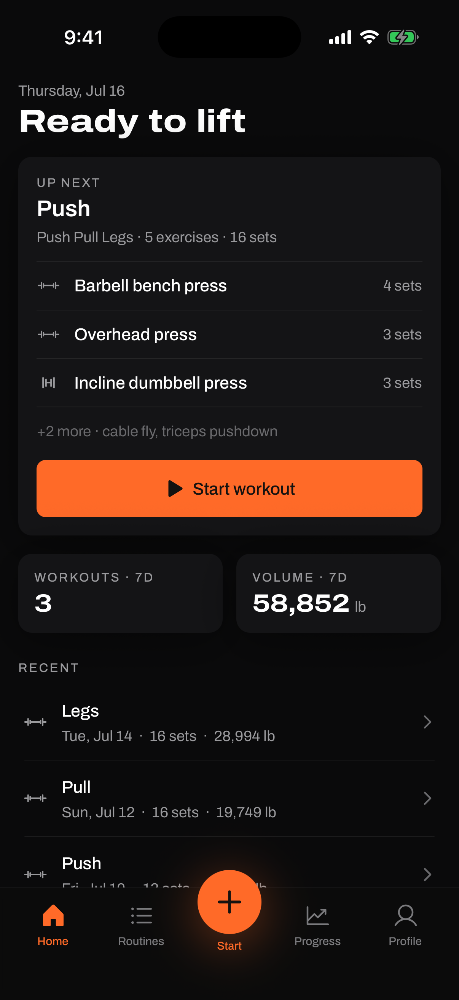
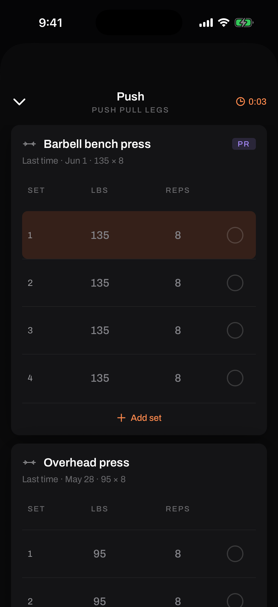
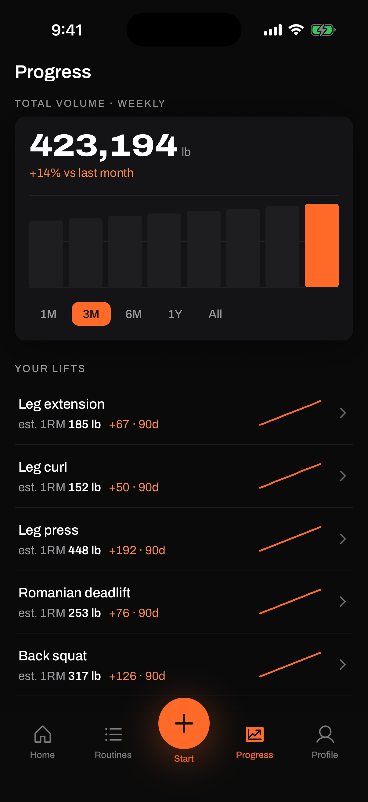
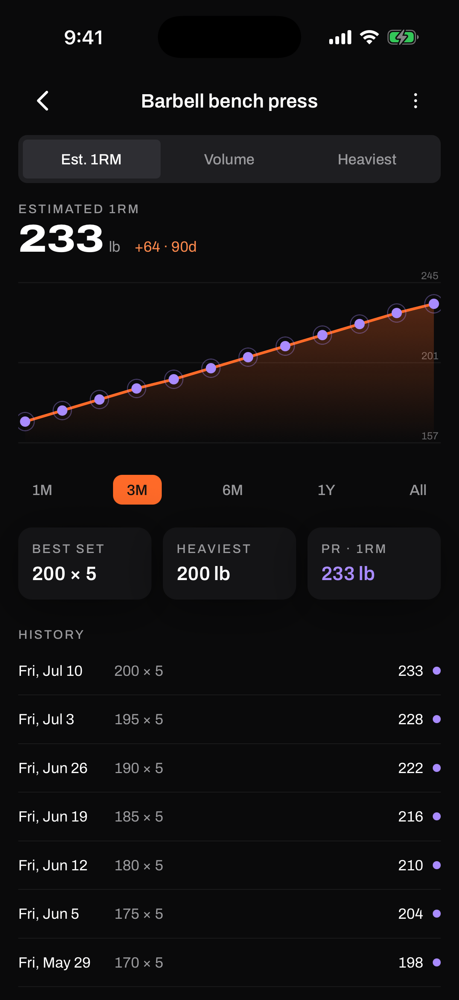
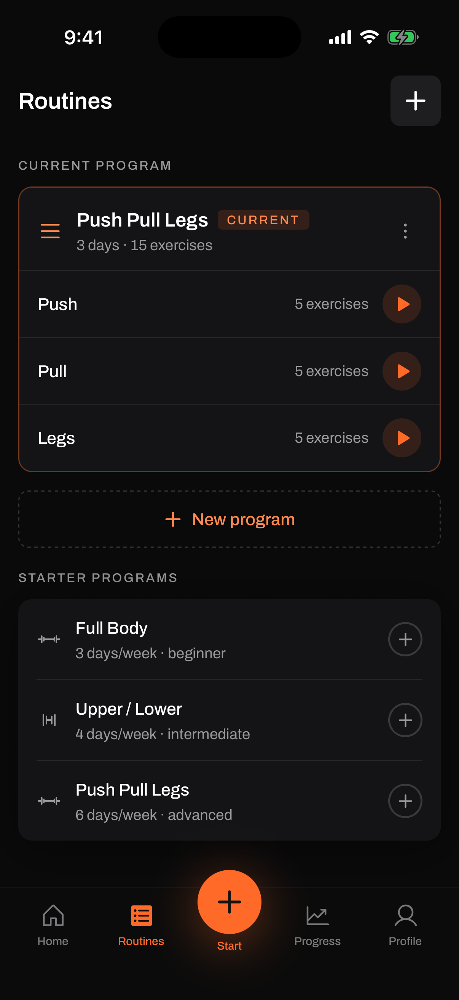
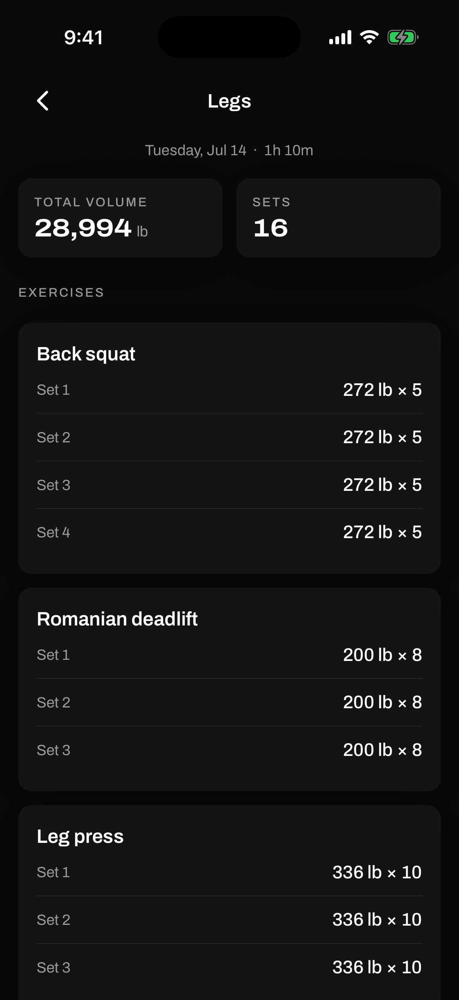

Case study 02
Onset
An iOS workout tracker built around one idea: logging a set should be quicker than skipping it. Programs, live session logging, and charts that show your strength actually moving.

01
Why it exists
Most workout apps die in week two because logging is a chore: too many taps between finishing a set and getting back to lifting. Onset optimizes exactly one moment, the thirty seconds between sets, and everything else follows from the data that falls out of it.
Log a set in a couple of taps and the app quietly builds the interesting stuff on its own: weekly volume, personal records, and estimated one‑rep‑max trends per lift, so you can watch strength move week over week without ever filling in a spreadsheet.
I designed and built it end to end with Claude Code, and it's been my daily gym companion since. This one isn't a client project. It's the app I wanted to exist.
02
What it does
- Programs. A current program (Push / Pull / Legs) plus starter templates from beginner full‑body to advanced splits.
- Live session logging. A set‑by‑set screen built for the gym floor: big targets, previous numbers in view, add a set in seconds.
- Strength trends. Estimated 1RM charts per exercise with best set, heaviest weight, and personal records tracked automatically.
- Weekly progress. Total volume with week‑over‑week change and per‑lift sparklines on one screen.
- Cloud sync. Supabase-backed account so history survives phone swaps and reinstalls.
03
The screens






04
Notes from building it
- Dogfooding is the feature factory. Almost every screen exists because something annoyed me mid‑workout. The best QA loop is being your own only user for months.
- Building with Claude Code end to end. The whole app was designed and built in an AI pair‑programming loop, which is exactly the workflow I now bring to consulting work: fast iterations, real releases, honest testing on real hardware.
- Charts earn their place. Estimated 1RM turned out to be the single most motivating number in the app. Watching the line move is why the logging habit sticks.